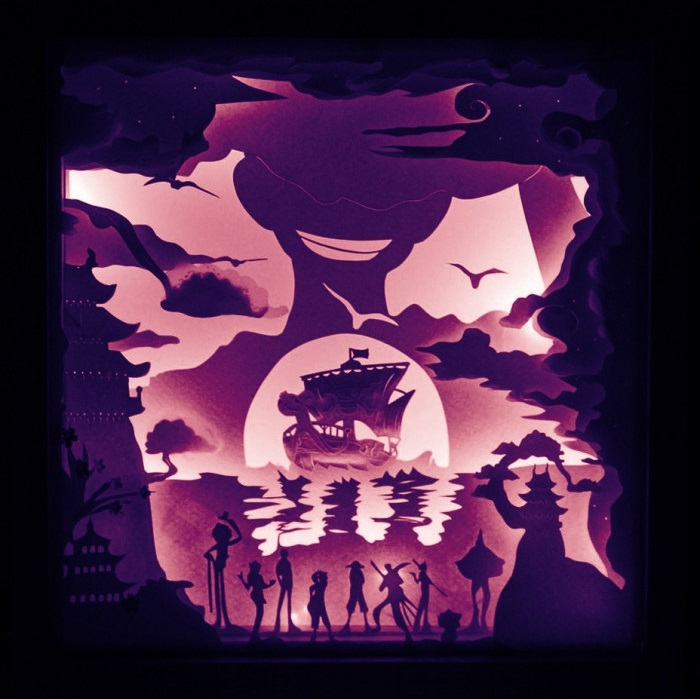

层次与光影
与更强调单张图案的剪纸不同，纸雕往往通过多层纸面、间隔支撑和前后错位形成更强的空间感。观看者不仅看到纹样本身，也会注意到阴影、透光和景深带来的变化。
它可以是单层刻纸后的浅浮雕效果，也可以是多层叠景构成的小型场景、灯影纸盒或装饰屏风。纸雕因此常被用于节令陈设、展览装置、橱窗展示以及书页艺术中。
在当代语境里，纸雕兼具传统手工的细腻与空间设计的秩序感，是纸艺由平面走向立体表达的重要方向之一。
纸雕让平面的纸张向空间展开。
刻线、叠层、撑高与透光，共同塑造出可被观看、也可被陈设的纸面景观。
与更强调单张图案的剪纸不同，纸雕往往通过多层纸面、间隔支撑和前后错位形成更强的空间感。观看者不仅看到纹样本身，也会注意到阴影、透光和景深带来的变化。
它可以是单层刻纸后的浅浮雕效果，也可以是多层叠景构成的小型场景、灯影纸盒或装饰屏风。纸雕因此常被用于节令陈设、展览装置、橱窗展示以及书页艺术中。
在当代语境里，纸雕兼具传统手工的细腻与空间设计的秩序感，是纸艺由平面走向立体表达的重要方向之一。


把前景、中景与背景拆分到不同纸层上，通过层层错位获得景深，而不是只依赖单张图案的完整度。
纸雕常需要比普通剪裁更细致的边界处理，刀口清晰与否会直接影响层次边缘的干净程度和透光效果。
作品并不只在正面成立。背光、侧光或盒内光源都会改变轮廓关系，使纸雕拥有接近舞台布景的观感。
相比折纸的手持造型和剪纸的贴附属性，纸雕更容易进入桌面、橱窗、展墙等空间场景，形成完整的观看环境。

圆形开窗让观者的视线集中到龙猫与树洞中央，外圈枝叶则像舞台帷幕一样包住画面，是非常典型的角色场景型纸雕构图。
月亮、铁塔、路灯和恋人站位分别落在不同层上，背后的暖光把纸层厚度和空间远近一起显露出来，这是灯箱纸雕最有代表性的效果。

这张作品把海面、船只、人物群像和远景轮廓压进一个方形框景里，更接近可陈设、可展示的完整纸雕屏风或装饰盒形式。
当代延展
今天的纸雕不只停留在民间装饰或手工教学里。它与插画、舞台美术、橱窗陈列、书籍装帧和灯光装置不断结合，让纸艺既保留手工的温度，也能进入更完整的空间叙事。